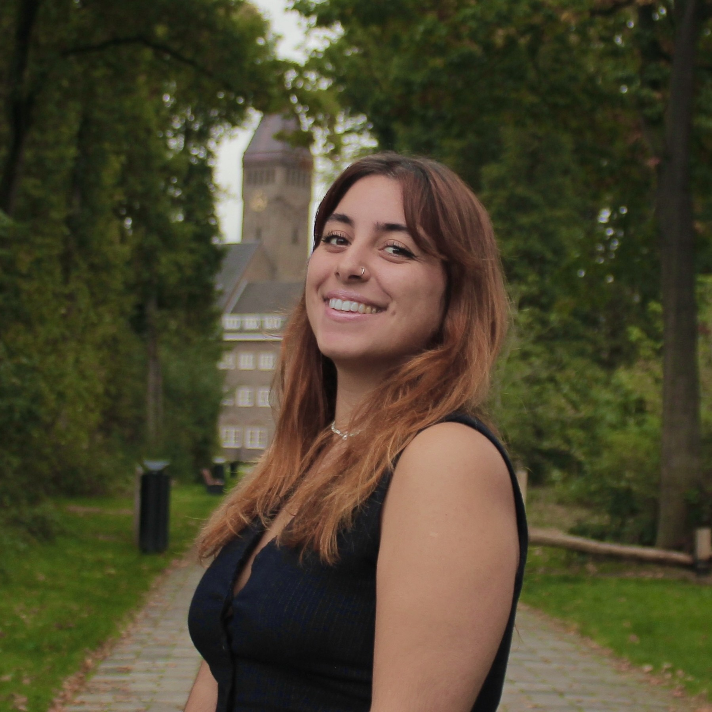

MSc in Cognitive Neuroscience | Radboud University, Netherlands
Aug 2026Development and Lifelong Plasticity

Neuroscience Researcher
Science Educator
Cognitive Neuroscience MSc graduate with interdisciplinary research experience across clinical, developmental and behavioural neuroscience. My background combines experimental research, human and animal studies, behavioural and electrophysiological data, and computational analysis. Alongside research training, I have developed a deep interest in learning and educational development through formal pedagogical training, classroom teaching and academic mentoring experience. I am curious about what makes us want to explore and learn and how research on cognitive processes can contribute to educational practice.
Development and Lifelong Plasticity
Biomolecular Sciences & Biotechnology
Neonatology dept. | Wilhelmina Children’s Hospital (WKZ), UMC Utrecht, Netherlands
Investigated the sleep-wake patterns of preterm infants during NICU care from ML-derived sleep-state classification.
Molecular Psychiatry Lab | Radboud University Medical Center, Netherlands
Analysed large-scale genomic datasets of patients with ADHD, exploring biological factors associated with neuropsychiatric conditions.
Developmental Psychobiology Lab | Baby and Child Research Center & Donders Institute, Netherlands
· Conducted a literature review and evidence synthesis on early-life stress biomarkers and infant neurodevelopment.
Sleep & Memory Lab | Donders Institute, Netherlands
Supported human research on sleep, dreaming and memory consolidation.
Semantic Memory Lab | Donders Institute, Netherlands
Supported translational neuroscience research investigating sleep and memory processes in neurodevelopmental disorders through rodent electrophysiological and behavioural data analysis.
Neurophysiology & Behavior Lab | University of Crete, Greece
Investigated behavioral, cognitive, histological and electrophysiological alterations in a rodent model of schizophrenia.
Neurophysiology & Behavior Lab, University of Crete, Greece
Examined neuronal activation and adaptations in the MAM mouse model of schizophrenia following a delayed non-match to sample alternation task.
Radboud University, Donders Institute, UMC Utrecht & University of Crete
Trained new team members in research protocols and synthesized evidence for comprehensive literature reviews. Additionally, I adapted and presented these scientific findings to diverse, multidisciplinary audiences.
2nd General High School, Heraklion, Greece
Planned and independently delivered lessons as part of teaching practice, applying pedagogical training in lesson design, teaching methods and classroom interaction.
Neurophysiology & Behavior Lab, University of Crete, Greece
Supervising and teaching laboratory techniques to undergraduate students.
SOS Children’s Villages, Greece
Provided educational support and tutoring to children, adapting explanations and activities to their needs.
Synapsium Neuroscience Symposium | Synapsium Committee (Dondrite), Radboud University & Donders Institute, Netherlands
Coordinated communication, scheduling, event organization, and promotion for a student-led scientific symposium.
Scientific Outreach Events | Netherlands & Greece
Supported science communication and public engagement activities for non-specialist audiences.
Email addresses
niki.tyraki@ru.nl
nikitir2000@hotmail.com